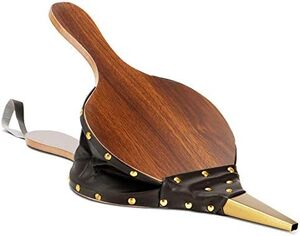

ϩⲟⲓ B nn m, bellows: Job 32 19 (S ϩⲱⲧ) φυσητήρ كور;ϩⲱⲓ same ?: K 125 = P 55 9 blacksmith's tools ⲡⲓⲱ. ﻛ׳، منفخ (but P 44 67 ﻛ׳ ϩⲣⲱ).

| ⲱϩⲓ B | (noun masculine)same? blacksmith's tools كور, منفخ322 | 652b | |||||||
ⲱϩⲓ v ϩⲟⲓ bellows.
ϩⲟⲓ B nn m, bellows: Job 32 19 (S ϩⲱⲧ) φυσητήρ كور;ϩⲱⲓ same ?: K 125 = P 55 9 blacksmith's tools ⲡⲓⲱ. ﻛ׳، منفخ (but P 44 67 ﻛ׳ ϩⲣⲱ).
| view | ϩⲟⲓ B | (noun feminine) heap of grain [θιμανια]2115 |